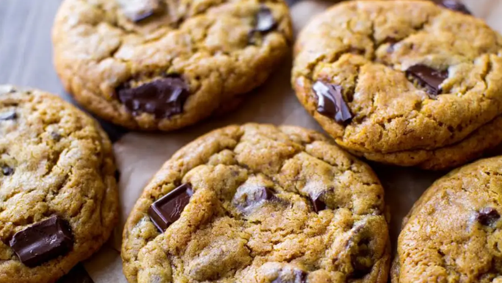

Chocolate chip Cookies

Ingredients
- 1 and 3/4 cups all-purpose flour
- 1 teaspoon baking powder
- 3/4 teaspoon baking soda
- 1/2 teaspoon salt
- 10 Tablespoons softened unsalted butter
- 2/3 cup + 1/2 cup ground coconut sugar
- 1 large egg + 1 large egg yolk
- 1 Tablespoon pure vanilla extract
- 5 ounces semisweet chocolate chips
Steps
-
Whisk the flour, baking powder, baking soda, and salt together until
combined. Set aside.
-
In a large bowl using a hand-held or stand mixer fitted with a paddle
attachment, beat the butter on high speed until completely smooth and
creamy, about 2 minutes. Add the coconut sugar and beat on medium high speed
for 3 full minutes. Stop and scrape down the sides as needed. Beat
in the egg, egg yolk, and vanilla extract on high speed. Scrape down
the sides and bottom of the bowl as needed.
-
On low speed, slowly mix the dry ingredients into the wet ingredients
until combined. The cookie dough will be gold in color, sticky, and
thick. Fold in the chopped chocolate. Cover tightly and chill in the
refrigerator for at least 1 hour and up to 3 days.
-
Remove cookie dough from the refrigerator. If the cookie dough chilled
longer than 3-4 hours, let it sit at room temperature for about 20
minutes. This makes the cookie dough easier to scoop and roll.
-
Preheat oven to 350°F (177°C). Line two large baking sheets with parchment
paper or silicone baking mats. (Always recommended for cookies.) Set aside.
-
Roll cookie dough into balls, about 2 Tablespoons of dough each.
-
Bake the cookies for 11-14 minutes, or until very lightly browned and
crisp looking on the edges. My oven has hot spots and yours may too- so
be sure to rotate the pan once during bake time. The baked cookies will
look soft in the centers when you remove them from the oven. Allow to cool
for 5 minutes on the cookie sheet. Transfer to cooling rack to cool completely.
I find their flavor is even better the next day.